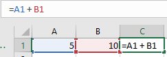
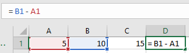
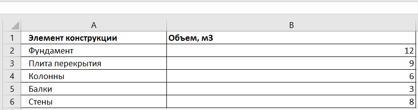
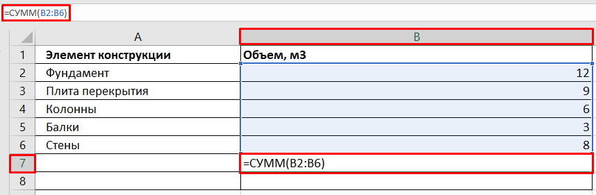
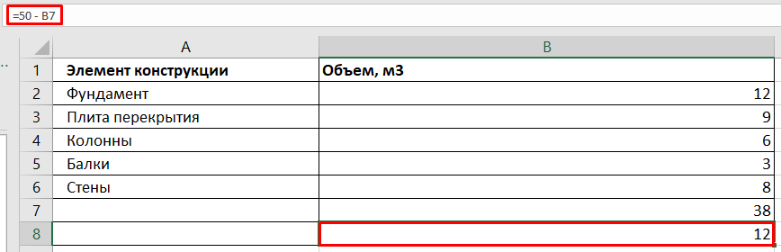

Сложение и вычитание

Андрей, привет! Рад тебя снова видеть на курсе по Excel для инженеров-строителей. Сегодня у нас начинается новый блок — Формулы. Это один из самых важных разделов, ведь с помощью формул Excel превращается из просто таблицы — в настоящий вычислительный инструмент. На этом уроке мы рассмотрим базовые операции — сложение и вычитание. Ты узнаешь, как вручную складывать и вычитать значения, а также познакомишься с функцией `СУММ()`, которая станет твоим лучшим другом в расчетах. На практике мы рассчитаем общий объем бетона для строительного проекта, используя знания из предыдущих уроков. После этого урока ты сможешь уверенно выполнять простые расчёты и понимать логику, на которой строятся более сложные формулы. Поехали!
Основы сложения и вычитания
Давай начнем с самого простого: прямое сложение. В Excel ты можешь использовать знак «+» для сложения чисел. Например, если в ячейке A1 у нас 5, а в B1 — 10, то в C1 мы можем написать формулу: = A1 + B1. Результат будет 15.

Аналогично работает и вычитание. Если ты напишешь в D1: = B1 - A1, то получишь 5.

Более наглядно смотри ниже.

Работа с функцией «СУММ()»
Но чаще всего мы складываем не «два», а «несколько значений». И вот тут помогает функция «СУММ()». Она выглядит так: =СУММ(A1:A5)
Эта формула сложит все значения от A1 до A5. Гораздо быстрее и надежнее, чем писать «=A1+A2+A3+...».
Практика: Расчет общего объема бетона
Теперь давай представим, что у нас есть таблица с объемами бетона, заливаемого в разные части конструкции:

Создай такую таблицу в Excel. В ячейке B7 напиши формулу: =СУММ(B2:B6) и нажми Enter. Это позволит тебе мгновенно посчитать «общий объем бетона». Например, получится 38 м³.

Ты также можешь ввести вычитание, если, допустим, хочешь узнать, сколько осталось от планового объема. Если план — 50 м³, а в B7 — фактический объем, тогда в B8 напиши: =50 - B7 и получишь остаток.

Как видишь, даже простые формулы уже дают нам огромную пользу. А дальше — еще интереснее! В следующем уроке мы перейдем к умножению и делению, и будем считать реальные строительные объемы, такие как кубатура фундамента. Но перед этим проверь свои текущие знания в коротком тесте и обязательно выполни домашнее задание.
Встроенный материал: Flipcard — открыть сохранённое содержание

Если из 50 вычесть результат формулы `=СУММ(B2:B6)` при значениях 12, 9, 6, 3 и 8, то Excel вернет остаток до 50
- Правда
- Ложь
Пояснение источника: Если из 50 вычесть результат формулы `=СУММ(B2:B6)` при значениях 12, 9, 6, 3 и 8, то Excel вернет остаток до 50
Формула =СУММ(5; 10; 15) вернет результат 35
- Правда
- Ложь
Пояснение источника: Формула =СУММ(5; 10; 15) вернет результат 30

Для сложения нескольких значений в Excel используют функцию `=ПЛЮС()`
- Правда
- Ложь
Пояснение источника: Для сложения нескольких значений в Excel используют функцию `=СУММ()`